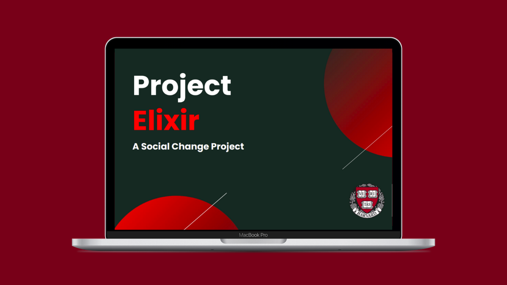
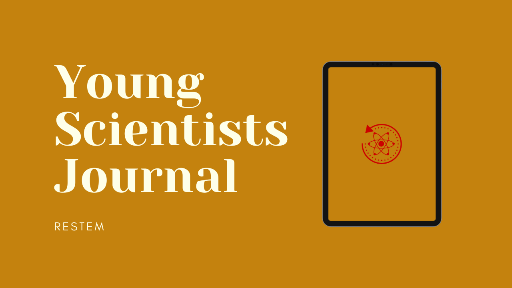

Hey there! I'm Naman.

I love solving problems. Throughout my educational career, I've been driven by my intellectual curiosity to find innovative solutions to pressing questions. Whether it's providing education to the underprivileged or leveraging ML to predict rare diseases, I've been able to quickly uncover pain points and identify strategic solutions.
Currently, I'm working with an insanely gifted group of people seizing incredible opportunities at the University of California, Los Angeles. I'm a lifelong learner obsessed with all things technology - so if you ever want to bounce ideas off of me, shoot me a message!
Quick Links: Education | Publications | Experience | Certifications | Awards and Honours | Projects | Contact
Education
University of California, Los Angeles // 2021 - 2025
Bachelor's of Science, Computer Science + Mathematics
Activities and Societies: AI Intern @ Association for Computing Machinery, Mentee @ MentorSEAS.
Delhi Public School, Gurgaon // 2013 - 2021
STEM Track, Grade XII (AISSCE) Score: 97.8%, Grade X (AISSE) Score: 97.8%
Activities and Societies: Student Body President, Chief Advisor @ Network of Digital Enthusiasts, Senior Officer @ Pi Squad, Core Team Lead @ Model UN Club, Peer Counsellor.
Here's my school award list.
Publications
Travelling Wave Solutions and Numerical Analysis of the Fisher-KPP Propagation
N. Modani, K. Velcheva | Institute of Mathematics and Informatics, Bulgarian Academy of Sciences | December 2020 |
- Authored an academic paper under Dr. Katerina Velcheva (Stanford Math) on the mathematical interpretation of the Fisher-KPP partial differential equation.
- Constructed traveling wave solutions by computing the Jacobian matrix and applying the Poincaré - Bendixson theorem in the context of population dynamics. Exposited the numerical analysis and the effect of a line of fast diffusion. Numerically analyzed the equation using the Reduced Differential Transform Method on MATLAB.
- Received an acknowledgment and plaque of distinction by the Union of Bulgarian Mathematicians.
Automated Traffic Regulation using Radio Frequency Identification and Geo-Fencing
M. Madhavan, N. Modani | International Research Journal of Engineering and Technology
(Impact Factor: 7.529, e-ISSN: 2395-0056, p-ISSN: 2395-0072) Volume 07, Issue 06 | June 2020 | Pages 3318 -3322 |
- Co-authored research paper on automated traffic regulation mechanisms under Dr. Chandra N. Sekharan (Loyola CS).
- Developed an integrated circuit harnessing the AIDC umbrella and an Arduino ATmega328P microcontroller to demonstrate how UHF RFID can synergistically work with geo-fencing to log traffic violation data into federal databases.
- Published in the International Research Journal of Engineering and Technology. Acknowledged and awarded by the Indian Institute of Technology faculty at the National Toyota Hackathon.
Projects

Developed a Python web app employing an image-classifying deep learning model to predict rare neurological diseases from MRI scans. Used FreeSurfer and GrayNet to process T1-weighted MRI scans from FTLDNI, PyTorch Geometric to build the GNN, and Flask and Bootstrap to create and deploy the web app for end-user access.

Developed and maintained the Elixir web app using JavaScript (Bootstrap and jQuery). Used C++ and PostgreSQL for backend and database management. Handled 200+ monthly users. Used Figma to design interactive widgets. Supervised weekly sprints in Trello, planned feature wireframes, and conducted team standups with 2 co-developers.

Developed an integrated circuit harnessing the AIDC umbrella and an Arduino ATmega328P microcontroller to demonstrate how UHF RFID can synergistically work with geo-fencing to log traffic violation data into federal databases.

Supervised construction of the design stash and principles. Developed the website by creating a JAMstack project in Jekyll and Strapi. Isomorphically rendered the backend in C++ and React. Handled 10,000+ monthly users.
Experience
Junior Academy Officer // New York Academy of Sciences
- Invited to the JA as a research scholar to construct innovative solutions to global challenges under academy scientists. Engaged in advanced STEM lectures and bootcamps in design thinking, scientific inquiry, experiment design, and prototyping.
- Spearheaded an international team of 6 that conceived Phoenix, a social innovation project targeting ocean cleanup. Used Blender to model an autonomous and scalable fish tank filtration system working symbiotically with an incinerating conical spouted bed pyrolyzing collected plastic to industrial crude oil.
- Pitched and acknowledged at the Clean Water global challenge by the Stanford d.school and OpenIDEO. Received a project distinction in the Sustainable Consumption category of the IILM Young Citizen Award Contest.
Founder // Sandhi - The Connect
- Spearheaded a team of 54 to establish a non-profit holistic education platform for 1500 underprivileged girls at three primary government schools across Delhi - NCR.
- Curated 80+ lessons implementing unconventional teaching mechanisms in vernacular languages, covering 14 subjects from Montessori to middle school.
- Liaised with the Municipal Corporation to improve infrastructural facilities. Counseled families and crowdfunded $10,000 in partnership with FuelADream to provide health kits to students.
- Received international recognition. Felicitated with the Global Young Leaders Award by the UN, and declared semi-finalists at the tGELF Youth Leader Program.
Software Developer // Google Code-in
- Awarded the Google Code-in Grand Prize for developing a 3D real-time strategy game in Python on the PySoy cloud engine. Used the OpenGL pipeline to render graphics.
- Extensively analyzed and added support for new XEP protocols to an IETF standard XMPP chat server. Built a WebSocket-based chat client using Rust and Cargo, updating libsoy to compile with Vala 0.36.
- Employed Gatsby and XSLT to develop the Copyleft Games webkit. Spearheaded weekly international meetups, and mentored 15+ community members.
Research Fellow // Bulgarian Academy of Sciences
- One of six international students invited to Sofia University to conduct research and attend advanced lectures in informatics and mathematics. Authored an academic paper under Dr. Katerina Velcheva (Stanford Math) on the mathematical interpretation of the Fisher-KPP partial differential equation.
- Constructed traveling wave solutions by computing the Jacobian matrix and applying the Poincaré - Bendixson theorem in the context of population dynamics. Exposited the numerical analysis and the effect of a line of fast diffusion. Numerically analyzed the equation using the Reduced Differential Transform Method on MATLAB.
- Received an acknowledgment and plaque of distinction by the Union of Bulgarian Mathematicians.
Youth Lead the Change (YLC) Scholar // Leadership Institute at Harvard College
- Among 100 global scholars invited to attend the YLC conference by the Leadership Institute at Harvard to study entrepreneurship, covering acquisition, investing, incubation, and networking.
- Pitched the business model for Elixir, an anonymous online platform designed to spread awareness about stigmatized mental health issues.
- Developed and maintained the Elixir web app using JavaScript (Bootstrap and jQuery). Used C++ and PostgreSQL for backend and database management. Handled 200+ monthly users.
- Used Figma to design interactive widgets. Supervised weekly sprints in Trello, planned feature wireframes, and conducted team standups with 2 co-developers.
Chief Advisor // Network of Digital Enthusiasts
- Represented and led the club to wins in 10+ national hackathons and quizzing events. Lectured juniors in Machine Learning under Project Vector's AI Beginner Track.
- Developed the backend for student organization websites in Python. Built and deployed using MongoDB, Flask, and Heroku.
Software Engineer // Young Scientists Journal
- Handled technological and design decisions for reSTEM, an initiative to democratize STEM by integrating research clubs across the globe. Consultant in the outreach department.
- Supervised construction of the design stash and principles. Developed the website by creating a JAMstack project in Jekyll and Strapi. Isomorphically rendered the backend in C++ and React. Handled 10,000+ monthly users.
Youth Ambassador // World Wildlife Fund - India
- Among 50 student activists invited to the second cohort of the WWF India's Young Conservationist Program to raise climate change awareness.
- Attended a customized environmental leadership program, developing advocacy strategies in national action plan panels. Delivered keynotes about decarbonization and carbon tax. Actively engaged with stakeholders at the city level and raised $4,500 over a span of six weeks.
- Researched trade-offs between environmental indicators for agricultural commodities. Leveraged Pandas, Numpy, and Matplotlib to process data and create interactive graph widgets.
Student Body President // Delhi Public School, Gurgaon
- Elected twice consecutively to represent all 6000+ students in executive decision-making with the director and board of trustees. Hosted batch meets and chaired council conferences. Created a virtual platform for students to voice their opinions and provide council feedback anonymously.
- Represented the institution at 20+ national events, based on technology, quizzing, public speaking, and debate. Operated as the lead organizer at the International Utopia Model UN conference, the International Kids Film Festival, and the National Directors Meet.
- Catalyzed multiple education-centric community service projects like Sandhi, Nidaan, and Interact. Conducted peer education sessions for underclasspeople on stigmatized mental health issues, career planning, and academic integrity.
Certifications
> Data Visualisation with R // IBM
> Deep Learning Fundamentals // IBM + deeplearning.ai
> Deep Learning with TensorFlow // IBM + deeplearning.ai
> Machine Learning with Python // IBM
> Blockchain Essentials v2 // IBM
> Cloud Computing: Fundamentals // IBM
Awards
Google Code-in Grand Prize // Google / 2020
Awarded the Google Code-in Grand Prize and an all-expense-paid trip to Googleplex, California for my open-source contribution to Copyleft Games in the largest iteration of the contest. Received a monetary prize of $3000, and an invitation to deliver a lightning talk about my work at the summit.
Karmaveer Chakra Award // United Nations / 2019
Felicitated with the Karmaveer Chakra Award and the Global Young Leaders Fellowship at the Indian Institute of Technology, Delhi for my work with Sandhi - The Connect.
Mother Teresa Star Student Award // Lions Clubs International / 2019
Recognized as Star Student of the Year at the Lions Club meeting in Kolkata, India for parallel proficiency in academics and community service, notably mathematics and Sandhi - The Connect.
PiCirql Trophy of Excellence // Clash of Pi / 2019
Felicitated with the trophy of excellence for my global top 100 performance in Clash of Pi, a multi-round online mathematics tournament.
Toyota's Award of Excellence // Toyota / 2019
Presented with the Toyota Award of Excellence in the final round of the Toyota National Hackathon held at the Indian Institute of Technology, Delhi. Stood 5th among 600+ teams for Matter Node.
Director's Gold Medal // Delhi Public School, Gurgaon / 2020
Received the Director's Gold Medal for consistent excellence in academics (90%+) for eight consecutive years under the Central Board of Secondary Education curriculum.